EXTERIOR
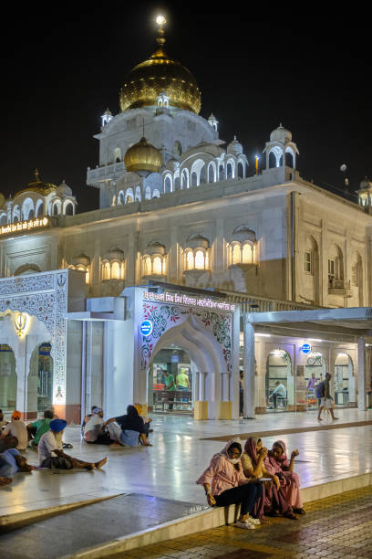
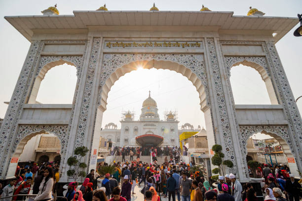
 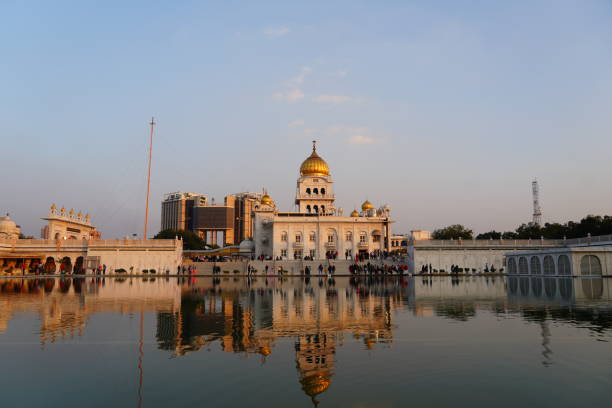
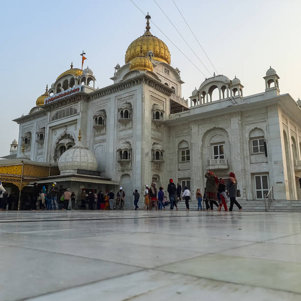
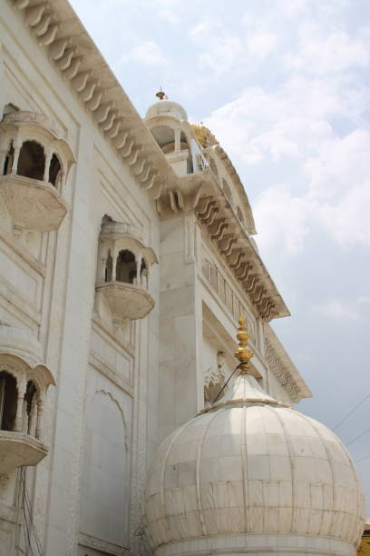
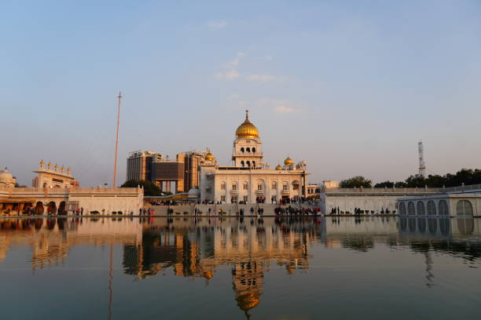
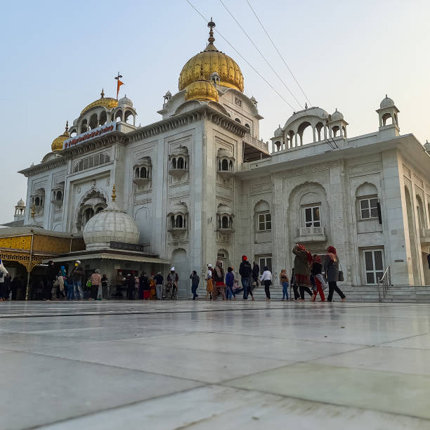
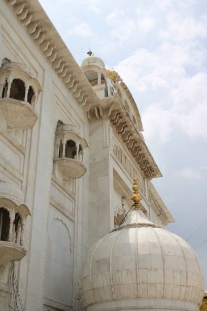
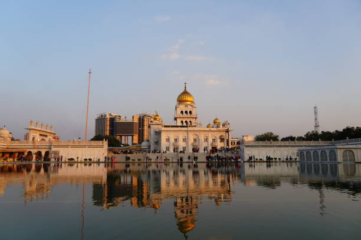
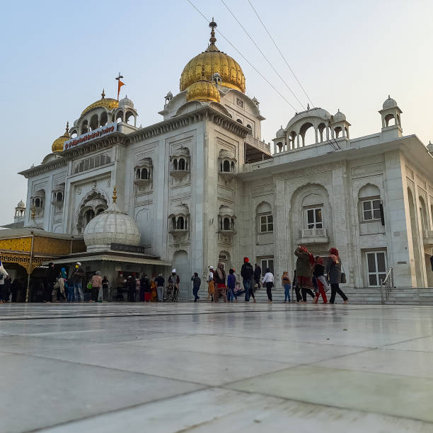
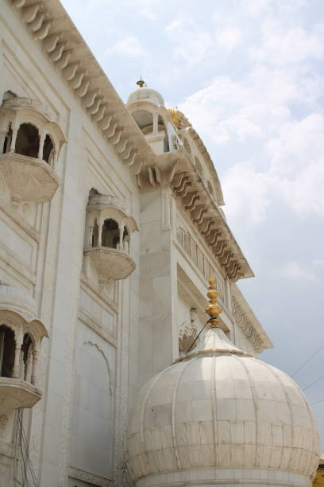
- MYTHS
- Miraculous Healing Powers: There's a myth that the waters of the sarovar (holy pond) at Gurudwara Bangla Sahib possess miraculous healing powers. While the sarovar is considered sacred, any perceived healing effects are likely attributed to faith rather than supernatural powers.
- Haunted Gurudwara: Like many historical sites, there are myths about Gurudwara Bangla Sahib being haunted by spirits. However, there's no substantial evidence to support these claims, and the gurudwara is primarily a place of worship and community service.
- Secret Underground Passages: Some myths suggest that Gurudwara Bangla Sahib has secret underground passages or chambers. However, no such passages have been discovered or confirmed.
- Divine Apparitions: There are myths about divine apparitions or miracles occurring at Gurudwara Bangla Sahib, such as statues coming to life or divine visions appearing to devotees. However, these stories are often exaggerated or based on folklore.
- Cursed Land: It's sometimes believed that the land on which Gurudwara Bangla Sahib stands is cursed or haunted due to its historical significance and past events. However, there's no evidence to support such claims, and the gurudwara remains a revered place of worship for Sikhs.
INTERIOR
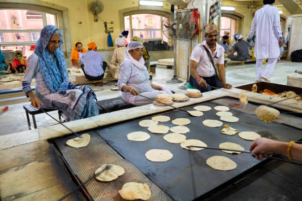
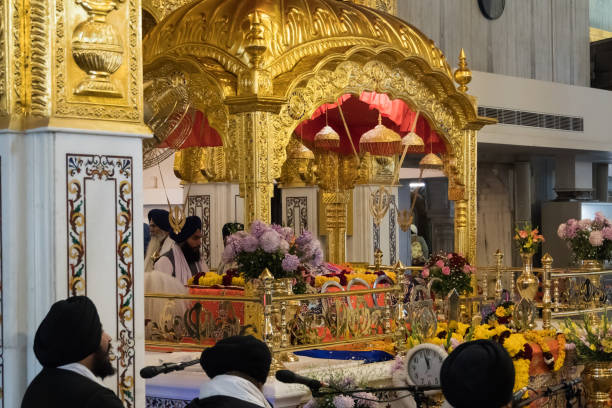
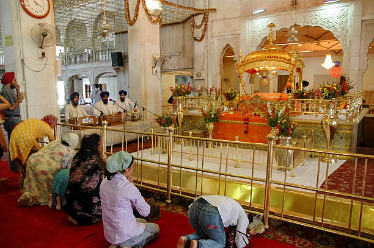
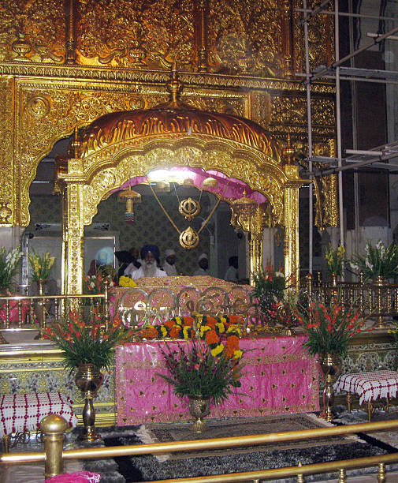
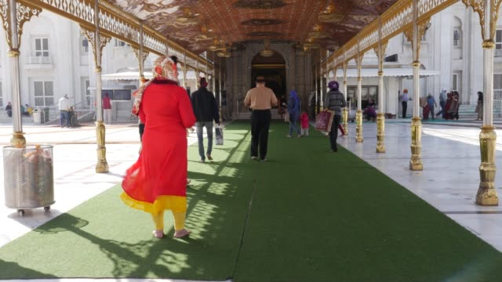
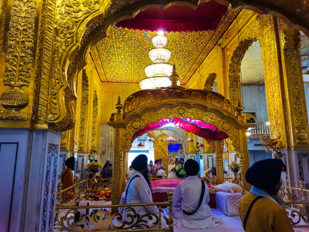
- FACTS
- Historical Significance: Gurudwara Bangla Sahib is a historic Sikh gurudwara located in the heart of New Delhi, India. It holds significant religious and cultural importance for the Sikh community worldwide.
- Dedicated to Guru Har Krishan Sahib: The gurudwara is dedicated to Guru Har Krishan Sahib, the eighth Sikh Guru, who stayed at the bungalow (bangla) adjacent to the sarovar during his visit to Delhi in the 17th century.
- Sarovar (Holy Pond): One of the prominent features of Gurudwara Bangla Sahib is its sarovar, known as the "Sarovar of Immortality," where devotees take a dip to seek spiritual purification and blessings.
- Langar (Community Kitchen): Gurudwara Bangla Sahib operates a langar, or community kitchen, where free meals are served to all visitors regardless of caste, creed, or religion. It exemplifies the Sikh principles of equality, compassion, and selfless service.
- Architectural Beauty: The gurudwara's architectural design is characterized by its striking white marble façade, golden domes, and intricate carvings, reflecting the grandeur and beauty of Sikh architecture. It attracts devotees and tourists from all over the world who come to experience its spiritual ambiance and cultural heritage.